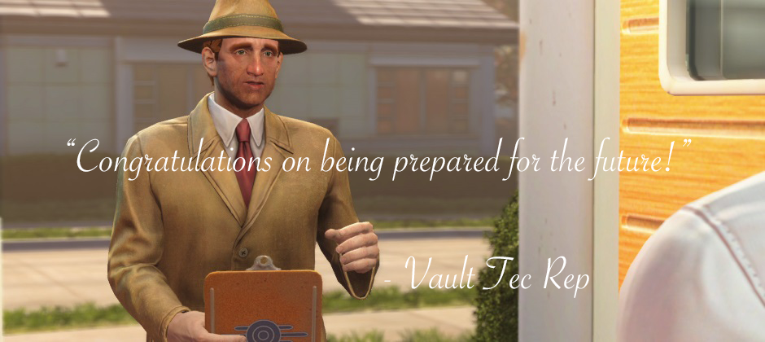
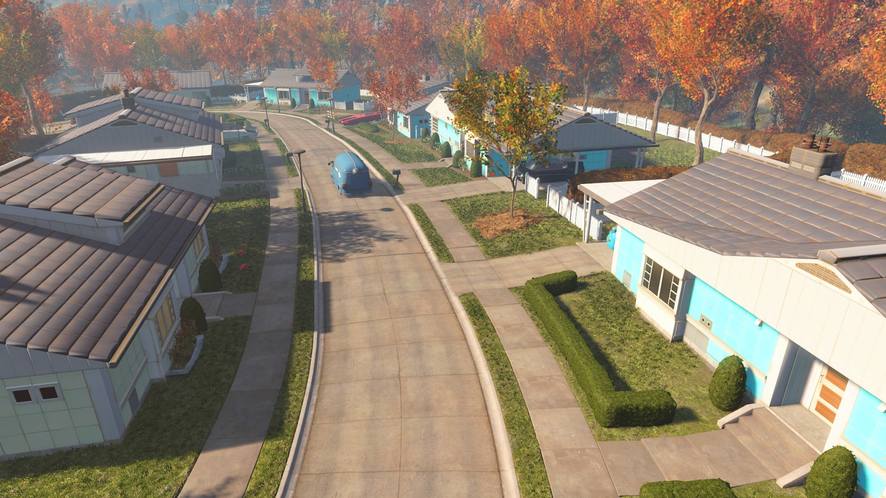
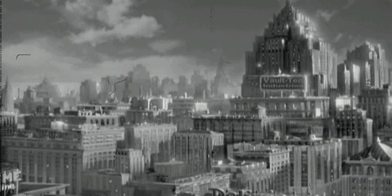

Return
About Us 

Our Mission
The primary focus of Vault-Tec is the development of a line of nuclear war defense installations and the technology necessary for their construction. Although our most recognizable product remains the venerable Vault, the company has also developed cheaper alternatives, like the Series 1000 shelter, and contracted our technologies out to other entities requiring a reliable, proven pipeline for constructing subterranean bunkers
History
The origins of America's preeminent nuclear defense corporation are shrouded in mystery. We have existed as early as 2031, when we acquired and re-branded Morgantown's local college as Vault-Tec University, with some of our top executives and scientists either teaching or graduating from there. This investment in cadre would pay off in the early 2050s: When the Euro-Middle Eastern War, the New Plague, and the collapse of the United Nations resulted in a nation-wide scare, the government set Project Safehouse in motion in 2054. This massive national defense endeavor was intended to create shelters that would protect the population in the event of a nuclear war or plague.